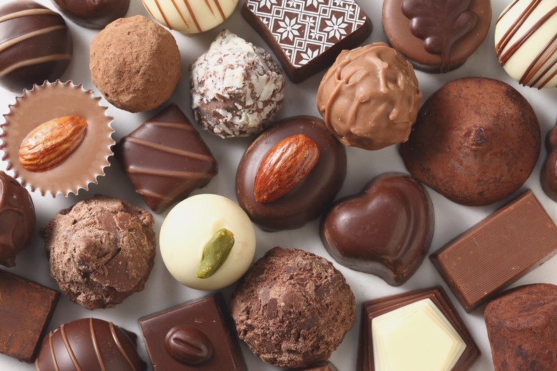
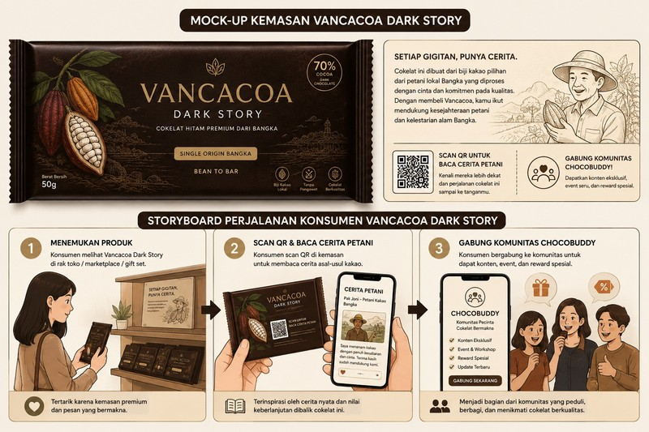
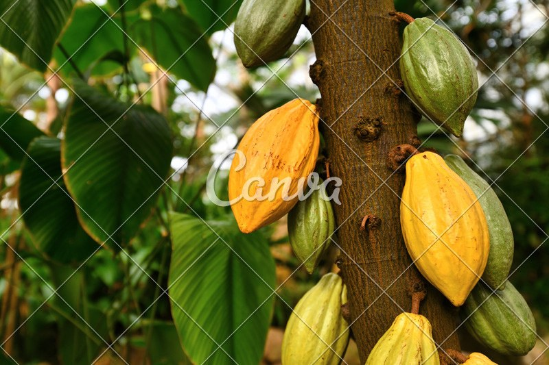
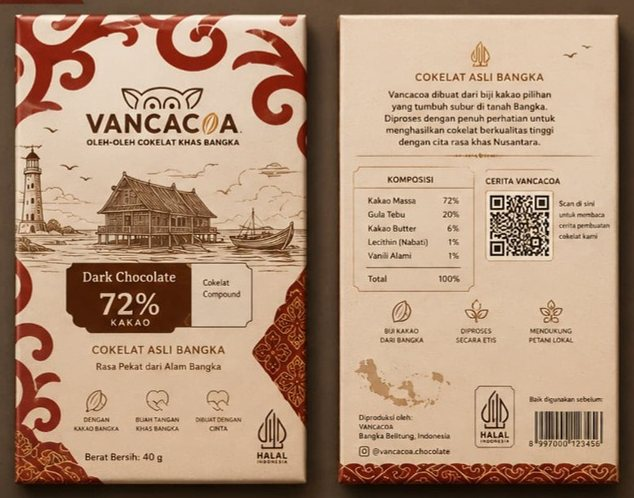
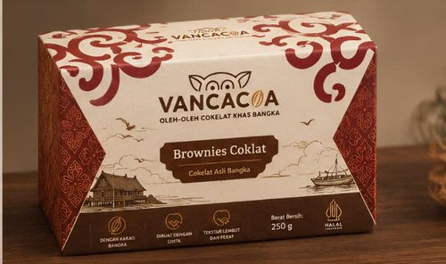
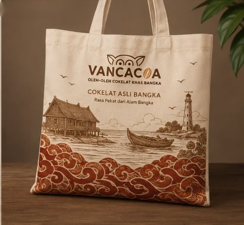
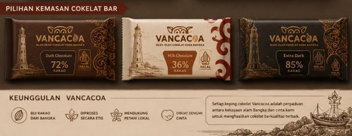

Cokelat single origin dari Bangka
Every chocolate
has a story.
Mengangkat kakao Bangka, memberdayakan petani, menciptakan nilai. Scan, baca, lalu rasakan perjalanannya dari kebun sampai jadi cokelat.
From Local Cocoa to Local Impact
Progres awal membentuk ekosistem
0petani kakao
dibina dan bermitra
dibina dan bermitra
0desa/kelurahan
dieksplorasi potensinya
dieksplorasi potensinya
0single origin
diproduksi jadi cokelat bar
diproduksi jadi cokelat bar
0varian cokelat
telah dikembangkan
telah dikembangkan
0pelatihan
pengolahan kakao diinisiasi
pengolahan kakao diinisiasi
0winnower
dirancang dan dibuat mandiri
dirancang dan dibuat mandiri
Kenapa Vancacoa ada
Bangka perlu nilai tambah produk
- Ekonomi masyarakat masih sangat bergantung pada timah dan sawit.
- Nilai kakao belum optimal. Harga di tingkat petani belum selalu mencerminkan mutu dan potensi pengolahannya.
- Oleh-oleh perlu pembeda. Bangka membutuhkan lebih banyak produk khas berbasis komoditas lokal.
#6
Indonesia berada di posisi ke-6 negara dengan konsumsi cokelat terbesar di dunia (7,3 kg per kapita).
Data 2021, dikutip Databoks/Tempo
17,5%
Produktivitas kakao Bangka Belitung mencapai 0,53 ton/ha, lebih tinggi dari rata-rata nasional.
Sumber: Statistik Tanaman Perkebunan Indonesia
Interactive storytelling
Perjalanan Cokelat Vancacoa
Klik tiap tahap untuk melihat bagaimana petani dan tim kami mengubah sebutir biji menjadi sebatang cokelat.
Interactive QR Storytelling
Scan, baca ceritanya, gabung komunitas
- Temukan produk. Tertarik pada kemasan premium bermotif khas Bangka.
- Scan QR dan baca cerita petani. Kenali orang di balik kakao yang kamu pegang.
- Gabung ChocoBuddy. Dapat konten eksklusif, event, dan reward spesial.
Coba sendiri di layar HP di samping.
VANCACOA
DARK STORY
Single Origin Bangka
Scan untuk baca cerita petani
Cerita petani
[Nama petani mitra]
[Desa/kelurahan], Bangka
“[Tempel kutipan petani di sini.]”


Letakkan foto kebun/petani di
images/kakao-bangka.jpgDi balik setiap batang
Dampak yang kami cari
Bukan hanya penjualan, tetapi penguatan alasan ekonomi untuk merawat dan menanam kakao Bangka.
1
Harga lebih baik
Kakao dibeli di atas rata-rata pengepul.
2
Insentif mutu
Petani terdorong memperbaiki pascapanen.
3
Produk bernilai tambah
Kakao hadir sebagai cokelat dan oleh-oleh.
4
Pasar yang tumbuh
Permintaan membuka ruang kemitraan petani baru.
Kenapa Vancacoa berbeda
Sentuh atau klik kartu untuk membaliknya.




Main sebentar
Seberapa kenal kamu dengan cokelat?
Gabung Komunitas ChocoBuddy
Dapatkan konten eksklusif, event dan workshop, serta reward spesial untuk pecinta cokelat bermakna.